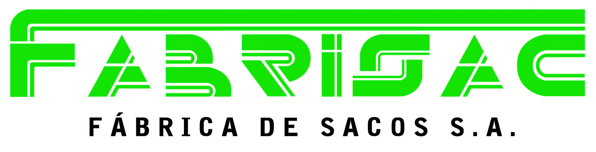

<ion-header>
  <ion-toolbar>
    <ion-title class="ion-text-center">
      
    </ion-title>
  </ion-toolbar>
</ion-header>

<ion-content >
  <ion-grid>
    <ion-row>
      <ion-col align-self-center>
        <ion-button [routerLink]="['/registration']" expand="block" color="primary">Register</ion-button>
        <span class="divider-line">o</span>
        <br>
        <span class="already">Ya eres Usuario?</span>
        <ion-button [routerLink]="['/login']" expand="block" color="danger">Sign In</ion-button>
      </ion-col>
    </ion-row>
  </ion-grid>
</ion-content>